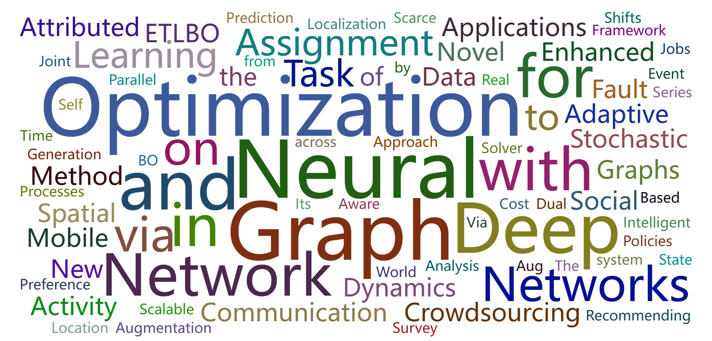
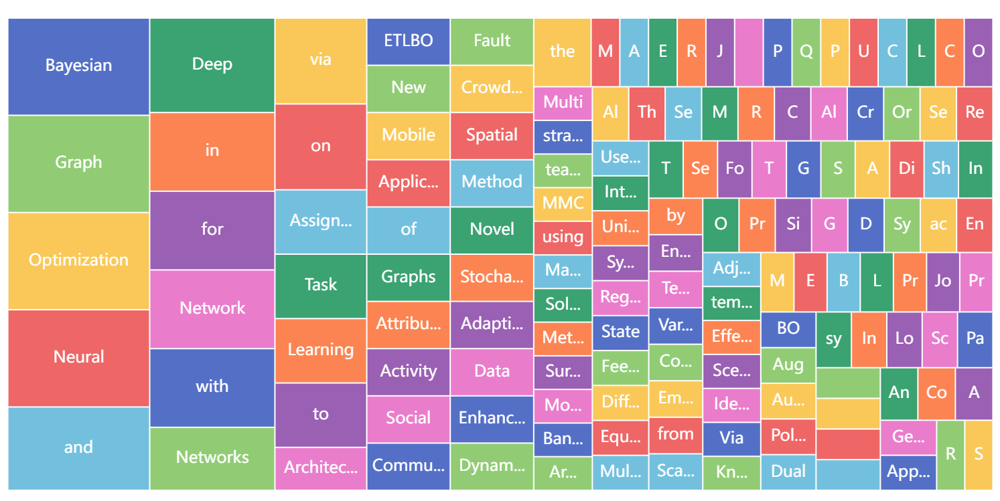

About Me
Hello, I’m Jiaxu Cui!
Now, I am an associate professor (tenure-track) in
Jilin University, China.
I am currently working on AI4Science.
 The academic headline app developed by our group can be downloaded now.
The academic headline app developed by our group can be downloaded now.
Research Interests: Complex Systems, Complex Networks, Bayesian Optimization, Network Representation Learning, Graph Generation, Constraint Satisfaction Problems.
 
Here is my CV: English | 中文
Highlights:
-
Congrats!
Our two papers have been accepted by The 34th International Joint Conference on Artificial Intelligence (IJCAI-25) (CCF A).
-
Congrats!
Our one paper has been accepted by Science China Information Sciences (CCF A).
-
Congrats!
Dongyu Wang, who is an undergraduate student, won the Excellent Graduation Thesis of Jilin University.
-
Congrats!
Our one paper has been accepted by The 33rd International Joint Conference on Artificial Intelligence (IJCAI-24).
-
Congrats!
Lianze Shan, who is an undergraduate student I co-supervised, won the Excellent Graduation Thesis of Jilin University.
- Congrats! Our paper "Survey on Bayesian Optimization Methodology and Applications" has been
selected as the "highly cited paper of CNKI"
(
中国知网高被引论文
)
-
Congrats!
Our one paper has been accepted by International Journal of Machine Learning and Cybernetics (IJMLC).
-
Congrats!
I was selected into the Sixth Jilin Province Youth Science and Technology Talent Support Project.
-
Congrats!
Our one paper has been accepted by IEEE Transactions on Computer-Aided Design of Integrated Circuits and Systems (IEEE TCAD).
- Congrats! Our survey paper "Survey on Bayesian Optimization Methodology and Applications (贝叶斯优化方法和应用综述)" has been
awarded as the "High Impact Paper of Journal of Software in 2020"
(
《软件学报》2020年高影响力论文
)
↪cited 550+,
↗downloaded 23500+ (Rank 34th among all published articles in the journal.).
-
Congrats!
We won the WINNING prize (top 14%) in the 1ST CHINA POSTDOCTORAL INNOVATION & ENTREPRENEURSHIP COMPETITION (首届全国博士后创新创业大赛).
Ongoing Research Projects:
- National Natural Science Foundation of China (Grant No. 62206105), 2023-2025, (300,000 RMB)
- Natural Science Foundation of Jilin Province (Grant No. 20250102211JC), 2025-2027, (100,000 RMB)
- Scientific Research Project of Education Department of Jilin Province (Grant No. JJKH20250118KJ), 2025-2026, (20,000 RMB)
Completed Research Projects:
- The Sixth Jilin Province Youth Science and Technology Talent Support Project (QT202225), 2022-2024, (100,000 RMB)
- China Postdoctoral Science Foundation Funded Project under Grant No.2021M701388, 2022-2023, (80,000 RMB)
- Jilin University "Dingxin Scholar" Support Project, 2021-2023, (600,000 RMB)
Papers:
Students:
Qifei Li, PhD student, 2025 Fall-
Qipeng Wang, PhD student, 2024 Fall-
Zhimin Zhao, MS student, 2025 Fall-
Yiming Zhao, MS student, 2024 Fall-
Shiang Sun, MS student, 2024 Fall-
Zhiyang Geng, MS student, 2024 Fall-
Alumni:
Dongyu Wang [undergraduate student (2023-2024). She won the Excellent Graduation Thesis of Jilin University and has been recommended as a PhD student of Jilin University.],
Junjia Du [undergraduate student (2023-2024)],
Jialin Wu [undergraduate student (2023-2024)],
Hao Zhai [undergraduate student (2023-2024)],
Lianze Shan [undergraduate student I co-supervised (2022-2023). He won the Excellent Graduation Thesis of Jilin University and has been recommended as a graduate student of Tianjin University.]
Timeline:
- Jul 2023: Joined the College of Computer Science and Technology in Jilin University as a tenure-track associate professor.
- Jul 2023: Completed a two-year postdoctoral career in Jilin University.
- Mar 2023: Our paper "Survey on Bayesian Optimization Methodology and Applications" has been
selected as the "highly cited paper of CNKI"
(
中国知网高被引论文
)
- Mar 2023: My thesis was awarded as Excellent Doctoral Thesis of Jilin Province.
- Sep 2022: My Project was funded by the National Natural Science Foundation of China.
- Jul 2022: I was selected into the Sixth Jilin Province Youth Science and Technology Talent Support Project.
-
Jan 2022: Our survey paper "Survey on Bayesian Optimization Methodology and Applications (贝叶斯优化方法和应用综述)" has been
awarded as the "High Impact Paper of Journal of Software in 2020"
(
《软件学报》2020年高影响力论文
)
- Dec 2021: Participated in the 1ST CHINA POSTDOCTORAL INNOVATION & ENTREPRENEURSHIP COMPETITION (首届全国博士后创新创业大赛), and won the WINNING prize (top 14%).
- Nov 2021: My Project was funded by China Postdoctoral Science Foundation
- Jul 2021 - Jul 2023: Postdoc in Jilin University, selected into Jilin University "Dingxin Scholar" Support Project.
- Jun 2021: My thesis was awarded as Excellent Doctoral Thesis by the Jilin University.
Doctoral Thesis: Bayesian Graph Optimization: Cost-Aware Network Optimization Theory and Method (贝叶斯图优化：关注成本的网络优化理论与方法)
Supervisor: Prof. Bo Yang
- May-Jun 2021: Passed the thesis defense and obtained the PhD degree from Jilin University.
- Feb 2021: Took part in the 35th AAAI Conference (AAAI-21) that was held virtually Feb 2-9, 2021.
- Oct 2020 - Jan 2021: Worked as an intern in Huawei.
- Aug 2019 - Jun 2020: Visited Prof. Jiming Liu's group at Hong Kong Baptist University (HKBU) as an exchange student.
- Jan 2019: Attended the 33rd AAAI Conference (AAAI-19) in Honolulu, Hawaii, USA.
- Dec 2018: Won the FIRST prize at the 11th Ph.D. Academic Forum of Jilin University - the sub-forum of Computer Science and Technology College. [Poster] [Slides]
- Summer 2018: Visited the DATA (Data Analytics at Texas A&M) Lab directed by Dr. Xia Hu.
- Sep 2016 – Jun 2021: PhD.S. major in Computer Software and Theory, College of Computer Science and Technology, Jilin University (JLU), China. Supervisor: Prof. Bo Yang
- Sep 2013 – Jun 2016: M.S. major in Software Engineering, Software College of Jilin University (JLU), China. Master Thesis: Research on the Extension and Application of Mistral Solver (Mistral求解器扩展与应用研究)
Supervisor: Prof. Yonggang Zhang
- Sep 2009 – Jun 2013: B.S. major in Software Engineering, Software College of Jilin University (JLU), China.
Service:
I have been invited as the Guest Editor/PC members/reviewers in the following conferences and journals:
- AAAI Conference on Artificial Intelligence (AAAI) 2022-2023
- International Joint Conference on Artificial Intelligence (IJCAI) 2021-2023
- IEEE Transactions on Neural Networks and Learning Systems (TNNLS) 2020-2021
- ACM Transactions on the Web (TWEB) 2022
- IEEE Transactions on Big Data (TBD) 2021
- International Journal of Machine Learning and Cybernetics (JMLC) 2022 (Guest Editor of Special Issue on Recent Advances in Graph Learning: Theory, Algorithms, Applications, and Systems)

{kind=link}
![[Poster]](files/posters/2018博士生学术论坛-墙报-崔佳旭.jpg){kind=link}